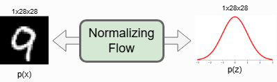

Probabilistic Learning#
Up to this point we have treated the target mapping as deterministic: for every input \(x\) there is a single, correct output \(y=f(x)\). That assumption is a drastic simplification. In realistic settings, solutions may be ambiguous, our learned model may confuse similar cases, and these effects often interact. This motivates a probabilistic treatment. Conceptually, we add a new axis to the problem: instead of a single outcome \(y\), we consider a distribution over possible outcomes \(p(y\mid x)\). Each candidate solution \(y^{(i)}\) carries a probability weight \(p(y^{(i)}\mid x)\) (often written simply as \(p\)), and samples \(\{y^{(i)}\}\) drawn from this distribution should reflect those probabilities so that rare and frequent outcomes are distinguishable.
In short, rather than reasoning about a single solution \(y\) per input, we reason about many samples \(y^{(1)}, y^{(2)}, \dots\) from a distribution that captures both variability in the data and uncertainty in our model.
Uncertainty#
Every component of our pipelines—measurements, mechanistic models, and numerical solvers—introduces uncertainty. Sensors and clinical assays add measurement error. Mathematical models only describe a subset of the relevant physiology or physics, leaving the rest unmodeled. Discretization in simulations injects numerical error. In learning systems, the trained model itself contributes approximation error. Together these sources shape the predictive uncertainty of our outputs. For practical decision making, it is essential to quantify this uncertainty—one of the core reasons to work with probabilistic models and the central focus of uncertainty quantification (UQ).
Aleatoric vs. Epistemic Uncertainty. It is common—though not always clean in practice—to separate predictive uncertainty into two broad types:
Aleatoric uncertainty is inherent variability in the data, such as sensor noise, stochastic biological processes, or unobserved confounders. It persists even with infinite data.
Epistemic uncertainty is uncertainty about the model—for example, due to limited training data, misspecified architectures, or poorly explored parameter regions. It can, in principle, be reduced by collecting more informative data.
A word of caution: this split is idealized. Effects may overlap and can be hard to disentangle. For instance, what looks like noisy outcomes (aleatoric) could stem from an overly coarse discretization or an inadequate hypothesis class (epistemic). In practice, the two often co-occur.
Closely related is the perspective of simulation-based inference (SBI). Here the emphasis lies on estimating likelihoods or posteriors for models that are specified by computer simulations rather than analytic formulas. SBI offers a principled workflow for marrying simulators with uncertainty and will serve as a guiding thread in what follows.
Forward or Backward?#
It is crucial to distinguish forward from inverse (or “backward”) problems. Traditional numerical methods largely target forward problems: given a current state and parameters, compute a steady-state or future state of the system.
Many scientific and clinical questions, however, are inverse problems. A forward simulator is still central, but the unknowns are the inputs or parameters that best explain observed data. Formally, let a simulator \(\mathcal{S}_\phi\) be parameterized by \(\phi\) (e.g., viscosity, diffusion rates) and act on a state \(x\) to produce an output \(y=\mathcal{S}_\phi(x)\). We observe \(y_{\text{obs}}\) and wish to infer \(\phi\) (and, at times, parts of \(x\)) such that the simulator’s output matches the observation. In the simplest deterministic setting, this becomes an optimization problem
Solving it might reveal, for example, the viscosity of a specimen from rheology data. Similar inverse formulations arise across disciplines—from material science and fluid mechanics to neuroimaging and cosmology.
For clarity of notation, we will often bundle any state components we intend to estimate together with the parameters into a single vector \(\theta\). We then “solve for \(\theta\)” while remembering that \(\theta\) may include physical parameters, initial conditions, boundary terms, or latent states.
In what follows we emphasize inverse problems because they showcase the strengths of probabilistic modeling most directly. However, the algorithms we develop are not limited to inverse problems; we will point to forward-model applications as well.
Simulation-Based Inference#
In inverse settings, matching a single observation is rarely sufficient. We want a \(\theta\) that explains a range of observations, we may entertain multiple plausible parameter values, and we often need to quantify how uncertain the estimate is. Are the data compatible with a narrow range of parameters, or could \(\theta\) vary by orders of magnitude without materially degrading the fit? Addressing such questions requires statistical inference—characterizing a distribution over \(\theta\) rather than a point estimate.
To connect with the aleatoric/epistemic split: in SBI we are primarily interrogating uncertainty in the observations given a scientific hypothesis encoded by a simulator. The simulator’s parameters \(\theta\) are random variables we aim to infer.
Let \(x\) denote the inputs to the simulator (which may include known states and controllable settings). Let \(z\) denote latent variables capturing unknown or uncontrolled aspects of the system (e.g., unobserved stochasticity, intermediate steps, or random branches in the simulator’s control flow). We adopt the following generative story:
Prior over parameters: \(p(\theta)\).
Prior over latents: \(p(z)\) (potentially conditioned on \(x\)).
Simulator outputs: \(y=\mathcal{S}_\theta(x,z)\).
We observe \(y_{\text{obs}}\) and seek the posterior over parameters
Bayes’ theorem underpins everything we do:
Both sides equal the joint \(p(\theta, y \mid x)\) divided by the marginal \(p(y \mid x)\).
The key building block is the likelihood
the probability of seeing \(y\) when the simulator is run at \(\theta\) (marginalizing latent randomness \(z\)). This integral is often intractable: \(z\) may be high-dimensional, hard to sample efficiently, or partly determined by opaque control flow. Classic estimators exist—Approximate Bayesian Computation (ABC) being a notable family—but they are computationally heavy, require careful summary statistics and distances, and suffer from the curse of dimensionality.
The denominator \(p(y \mid x)\) is the evidence (or marginal likelihood):
It normalizes the posterior. While the evidence need not be known to sample from the posterior (e.g., via MCMC, which uses ratios that cancel the evidence), estimating it can be useful for model comparison. In any case, computing likelihoods and evidences directly is rarely feasible for complex simulators, motivating learned approximations.
Leveraging Deep Learning#
This is where deep learning becomes especially powerful. We can learn a conditional density estimator
that approximates the posterior and supports fast sampling. Crucially, we can train it using simulated pairs \((\theta, y)\sim p(\theta)\,p(z)\,\delta(y-\mathcal{S}_\theta(x,z))\), without requiring closed-form likelihoods.
To emphasize the probabilistic role of the network, we switch from writing \(f_\theta\) for deterministic predictors to \(q_\psi\) for learned densities. We will often start with unconditional density models \(q_\psi(\theta)\) and then extend them to conditional forms \(q_\psi(\theta \mid x,y)\).
Pros of learned SBI approaches:
Fast inference after training: sampling or evaluating \(q_\psi(\theta \mid x, y)\) is cheap.
Mitigated curse of dimensionality relative to rejection-based ABC, via amortized, representation-rich models.
Flexible priors and posteriors: compatible with complex, multimodal, or heavy-tailed distributions.
Cons and caveats:
Heavy upfront cost: training requires many simulator runs and careful coverage of the parameter space.
Approximation gaps: theoretical guarantees are weaker than in asymptotic MCMC; misspecification or limited simulations can bias the learned posterior.
We will develop a widely used and remarkably effective family of models—diffusion-based methods—for learning such densities. Rather than jumping straight to the final algorithm, we will build it from first principles, as the path introduces several influential ideas in modern machine learning. We will focus on the core construction here and return later to physics-aware variants that integrate differentiable simulators.
Learning a Probability Distribution#
A central question in probabilistic modeling is: how can we learn an unknown probability distribution from data? When prior knowledge is available, we can posit a parametric family (e.g., a Gaussian in the simplest case). Given samples drawn from the target distribution, we then adjust the parameters by minimizing a measure of discrepancy between the target and our parametric approximation. This casts distribution learning as an optimization problem over probability measures.
Fundamentals: A Training Objective#
A widely used discrepancy measure is the Kullback–Leibler (KL) divergence between two distributions \(P\) and \(Q\) with densities \(p\) and \(q\) (with respect to a common base measure). It is defined as
The KL divergence satisfies \(\mathrm{KL}(P\|Q)\ge 0\) and \(\mathrm{KL}(P\|Q)=0\) if \(P=Q\) (i.e., \(p=q\) almost everywhere). Thus it acts as a principled “distance-like” objective for fitting distributions.
Suppose we choose a parametric family \(\{Q_\theta\}_{\theta\in\Theta}\) with densities \(q_\theta\). Each \(q_\theta\) must be a valid density:
Our goal is to pick parameters \(\theta\) so that \(Q_\theta\) is as close as possible to the true data-generating distribution \(P\). Using KL divergence as the criterion yields
Expanding the KL objective gives
The first term, \(\mathbb{E}_{P}[\log p(X)]\), does not depend on \(\theta\). Therefore, minimizing \(\mathrm{KL}(P\|Q_\theta)\) over \(\theta\) is equivalent to maximizing the expected log-likelihood under \(q_\theta\), or, equivalently, minimizing the negative expected log-likelihood:
In practice, the expectation over \(P\) is approximated with data samples \(\{x_i\}_{i=1}^N\sim P\), leading to the empirical objective
i.e., maximum likelihood estimation (MLE) for the model \(q_\theta\). Thus, learning a distribution by minimizing the forward KL reduces to fitting parameters that maximize likelihood on the observed samples, provided the parametric family always represents valid probability densities.
Generative Adversarial Networks#
We framed generative modeling as the task of representing the full distribution over possible states of a variable \(x\), i.e., learning \(p(x)\) (or \(p(x\mid c)\) when conditioned on inputs \(c\)). Long before diffusion models (DDPMs and relatives) rose to prominence, Generative Adversarial Networks (GANs) provided a powerful, if temperamental, route to this goal. Although much current research gravitates toward diffusion-based approaches, GANs remain conceptually elegant and practically useful. This chapter introduces their core ideas, explains how they are trained, and highlights scenarios—especially those with ambiguous targets and no differentiable physics model—where GANs excel by avoiding the “regression-to-the-mean” pitfall of standard supervised learning.
Maximum Likelihood Estimation#
To set the stage, recall classification with \(K\) classes. Given a dataset \(\{(x_i, y_i)\}_{i=1}^N\) with \(y_i\in\{1,\dots,K\}\), a probabilistic classifier \(p_\phi(y\mid x)\) (e.g., a softmax network with parameters \(\phi\)) is typically trained by maximum likelihood estimation (MLE):
This ubiquitous objective admits several equivalent views:
It minimizes the KL divergence between the empirical label distribution \(\hat p(y\mid x)\) and the model \(p_\phi(y\mid x)\).
It maximizes the empirical expected log-likelihood \(\mathbb{E}_{(x,y)\sim \hat p}\big[\log p_\phi(y\mid x)\big]\).
For \(K=2\) with a sigmoid output, it reduces to the standard binary cross-entropy.
This MLE perspective is central for GANs, where a classifier—the discriminator—is trained by (conditional) cross-entropy and then used to shape the generator.
Adversarial Training#
A vanilla GAN comprises two networks:
A generator \(G_\theta\) maps a random latent code \(z\sim p(z)\) (e.g., \(z\sim\mathcal{N}(0,I)\)) to a synthetic sample \(\tilde x=G_\theta(z)\).
A discriminator \(D_\psi\) maps a sample to a scalar \(D_\psi(x)\in(0,1)\), interpreted as “probability of being real.”
The canonical minimax objective is
Here the discriminator performs binary MLE: label real data as 1, generated samples as 0. The generator is trained through the discriminator to fool it. In practice, one often uses the non-saturating generator loss for stronger gradients:
Training alternates: update \(\psi\) with real and fake batches while holding \(\theta\) fixed, then update \(\theta\) using gradients that flow through \(D_\psi\). Over time, \(G_\theta\) learns to produce samples that are indistinguishable from real data according to \(D_\psi\).
Regularization#
Because GANs constitute a two-player game rather than a single convex objective, training can be fragile. Imbalances often lead to mode collapse (the generator concentrates on a few modes). Stabilization commonly relies on regularization and training heuristics, including:
Reconstruction terms for the generator, e.g., \(\lambda\lVert G_\theta(z) - x\rVert_1\) or \(\lambda\lVert \cdot \rVert_2\) when paired data are available. Pretraining \(G_\theta\) in a supervised fashion can provide a good starting point.
Feature matching: penalize \(\ell_2\) distance between intermediate discriminator features on real vs. generated samples, encouraging diverse outputs.
Gradient penalties / Lipschitz control: e.g., WGAN-GP or spectral normalization in \(D_\psi\) to stabilize the discriminator.
Label smoothing, instance noise, and data augmentation to prevent overconfident discrimination.
Update scheduling (e.g., TTUR): different learning rates or step counts for \(D_\psi\) and \(G_\theta\).
The overarching goal is to keep the generator–discriminator dynamic balanced so that both networks improve without overpowering each other.
Conditional GANs#
For many scientific and engineering problems we do not want to sample unconditionally from \(p(x)\); we need samples conditioned on inputs \(c\) (e.g., parameters, boundary conditions, low-resolution measurements). Conditional GANs (cGANs) incorporate \(c\) into both networks:
A common addition is a task loss that ties the output to the condition, e.g., for super-resolution
combined with the adversarial term. The discriminator now judges consistency between the condition \(c\) and the output, while the task loss preserves fidelity to known measurements.
Ambiguous Solutions#
Supervised regression with \(\ell_1/\ell_2\) losses is prone to averaging when the mapping is multi-modal—precisely the case for super-resolution, deconvolution, or ill-posed inverse problems. A single low-resolution input \(x_{\text{LR}}\) may correspond to many high-resolution solutions \(x_{\text{HR}}\). Minimizing MSE encourages the conditional mean, which can be blurry and unphysical.
GANs combat this by learning the conditional data distribution \(p(x_{\text{HR}}\mid x_{\text{LR}})\). The discriminator rewards realistic high-frequency structure, nudging the generator to commit to plausible modes instead of averaging across them.
Spatio-Temporal Super-Resolution#
Ambiguity is not only spatial. In dynamical systems, plausible futures can branch, and enforcing temporal coherence is crucial. Extending GANs to sequences is natural:
Use a temporal discriminator \(D_\psi\) that ingests clips or frame triplets \((x_{t-1}, x_t, x_{t+1})\) (or 3D convolutions over space–time) to judge whether the evolution looks realistic.
Condition the generator on past frames and low-resolution sequences, \(G_\theta(z, \{x_{\text{LR},\tau}\}_{\tau\le t})\), and jointly optimize adversarial and reconstruction terms.
Comparisons of time derivatives or other physics-motivated quantities often show that spatio-temporal GANs better capture dynamics than frame-wise models, aligning more closely with high-fidelity references.
Learning Distributions with Normalizing Flows#
GANs are prominent generative models and provide us a sampling mechanism for generating new data. However, they do not explicitly learn the probability density function \(p(x)\) of the real input data. Normalizing Flows, on the other hand, actually model the true data distribution and provides us with an exact likelihood estimate. The key idea is to use a sequence of invertible and differentiable mappings as layers for the neural network.

Invertible mappings#
Flows construct an invertible transformation
from data space \(\mathcal{X}\) to a latent space \(\mathcal{Z}\) endowed with a simple prior \(p_Z(z)\) (e.g., standard Gaussian). Invertibility enforces equal dimensionality: \(\dim(x)=\dim(z)\). Unlike VAEs—where \(\dim(z)\ll \dim(x)\) is common—flows maintain a bijective mapping, enabling lossless reconstruction: for each sample \(x\) there is a unique \(z=f(x)\) and vice versa \(x=f^{-1}(z)\). In the schematic above, this implies zero reconstruction error for flows, regardless of the specific invertible \(f\) and input \(x\).
Exact density via change of variables#
Let \(z=f(x)\) with a differentiable bijection \(f\). The change-of-variables formula gives the induced data density:
Univariate:
\[ p_X(x) \;=\; p_Z\!\big(f(x)\big)\;\Bigl|\tfrac{\mathrm{d}}{\mathrm{d}x}f(x)\Bigr|. \]Multivariate (\(x\in\mathbb{R}^d\)):
\[ p_X(x) \;=\; p_Z\!\big(f(x)\big)\;\Bigl|\det J_f(x)\Bigr|, \quad J_f(x) \equiv \frac{\partial f(x)}{\partial x}\in\mathbb{R}^{d\times d}. \]
Taking logs (the usual training objective),
Thus, evaluating likelihoods reduces to (i) mapping \(x\mapsto z\) and scoring under \(p_Z\), and (ii) computing \(\log|\det J_f(x)|\).
Transforming densities and volume correction#
View the flow backwards: start from a simple density \(p_Z\) and push it through an invertible map \(g=f^{-1}\) to synthesize data \(x=g(z)\). Any invertible transformation warps the density while preserving total probability. For a simple translation \(g(z)=z+1\), the shape shifts without volume change. For a scaling \(g(z)=2z\), volumes change and heights adjust correspondingly; the Jacobian determinant provides the exact volume correction (figure credit: Eric Jang).
As transformations become more expressive, computing \(g^{-1}\) and \(\log|\det J_g|\) can become costly. Flows resolve this by stacking many simple, tractable, invertible maps:
with each \(f_k\) designed so that \(f_k^{-1}\) and \(\log|\det J_{f_k}|\) are cheap. The total log-likelihood decomposes as
Planar and radial flows are early neural parameterizations of \(f_k\). For high-dimensional data such as images, coupling layers (e.g., RealNVP) and autoregressive layers (e.g., MAF), often with invertible \(1\times 1\) convolutions (Glow), provide scalable, tractable Jacobians.
Flows for images#
For image modeling, a flow maps an input image (e.g., MNIST) to a same-shaped latent tensor. This preserves exact invertibility and enables:
Density estimation: forward pass \(x\to z\), compute \(\log p_Z(z)+\sum\log|\det J|\).
Sampling: draw \(z\sim p_Z\), then invert \(z\to x=f^{-1}(z)\).
A practical flow implementation organizes:
a forward routine that returns \(\log p_X(x)\) (or NLL),
an inverse routine for sampling,
stable preprocessing (e.g., dequantization for discrete pixels),
layers with tractable \(\log|\det J|\) and efficient inverses.

Training, validation, and inference#
During training and validation, flows operate in the forward direction to maximize the exact log-likelihood (equivalently, minimize NLL). At inference:
Likelihood queries evaluate sample plausibility.
Generation uses the inverse path to synthesize new samples.
Latent manipulations are possible because \(f\) is bijective.